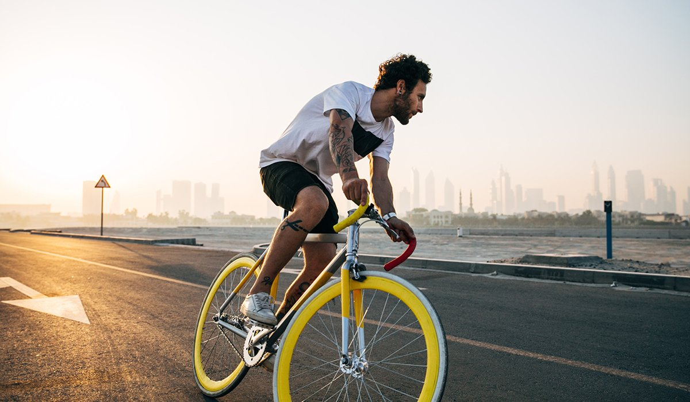

The Silent Revolution of Bicycles: Sustainable Mobility for All

Bicycles are gaining increasing prominence as an alternative form of sustainable mobility worldwide. Whether for urban commuting, leisure, or sports, bicycles offer numerous advantages for both individuals and the environment. In this article, we will explore various aspects of bicycles, from personal benefits to their impact on reducing pollution and promoting healthier and more accessible cities.
Health Benefits: Pedal for Your Health!
Regular cycling brings a range of health benefits. It is an effective way to engage in aerobic exercise, improving cardiovascular health, strengthening muscles, and aiding in weight loss. Moreover, cycling is a great way to reduce stress and enhance mental health. By incorporating cycling into your daily routine, you can reap these benefits without the need to spend time in gyms.
Sustainable Urban Mobility: Escape Traffic and Pollution
Bicycles play a crucial role in the quest for sustainable mobility solutions in congested cities. They are agile, cost-effective, and eco-friendly. By choosing to cycle instead of using a motorized vehicle, you contribute to reducing pollutant emissions, improving air quality, and decreasing traffic on the streets. Additionally, bicycles are an excellent alternative for short trips, making cities more accessible and less reliant on cars.
Personal Savings: Save Money by Pedaling
In addition to being environmentally friendly, bicycles are also budget-friendly. By choosing to cycle instead of drive, you save on fuel, parking, and vehicle maintenance costs. Even if you decide to invest in a quality bicycle, it will pay for itself quickly in long-term savings. Not to mention that you'll spend less on healthcare due to improved health.
Promoting Bicycle-Friendly Cities
For bicycles to play an even more significant role in our society, it is essential for cities to invest in proper cycling infrastructure. This includes safe bike lanes, bike parking, bike-sharing systems, and education for cyclists and motorists. As more people embrace cycling as a mode of transportation, creating a safe and supportive urban environment is crucial.
Conclusion: Pedal for a Sustainable Future
Bicycles are not just vehicles but also a way to promote a healthy and sustainable lifestyle. By adopting the bicycle as part of your life, you will be contributing to a greener and more accessible future. So, get out there, pedal, and be a part of this silent revolution that is transforming our cities and our planet. The bicycle is more than a means of transportation; it's a smart choice for a better world.